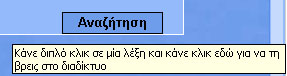
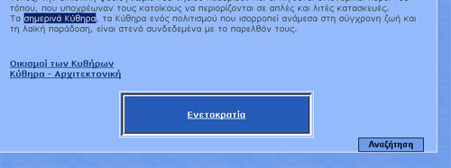
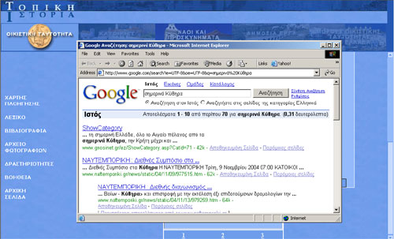

| Εγχειρίδιο Χρήσης |
7.1 ΑναζήτησηΤο κουμπί με την ένδειξη «Αναζήτηση» βρίσκεται στα εξής σημεία:
Χρησιμοποιείται ως εξής: Ο χρήστης επιλέγει μία λέξη ή φράση από το κείμενο. Αυτό μπορεί να γίνει με δύο τρόπους: με διπλό κλικ πάνω στη λέξη ή κρατώντας πατημένο το «ποντίκι» πάνω από μία φράση. Στη συνέχεια πατώντας το κουμπί «Αναζήτηση» ανοίγει νέο παράθυρο, στο οποίο εμφανίζονται τα αποτελέσματα της αναζήτησης της φράσης στο διαδίκτυο μέσω της μηχανής αναζήτησης Google .  Εικόνα 7.1.1 Αναζήτηση  Εικόνα 7.1.2 Χρήση της αναζήτησης 1  Εικόνα 7.1.3 Χρήση της αναζήτησης 2 |